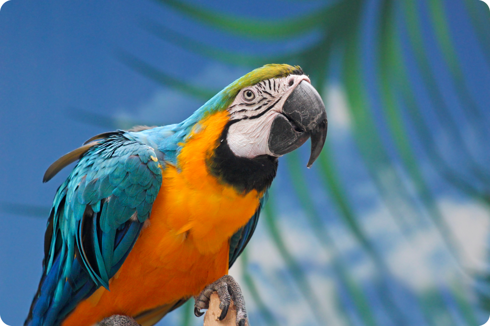
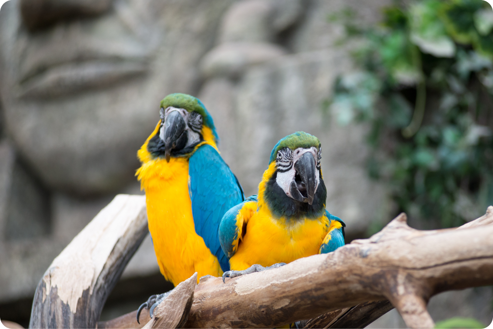
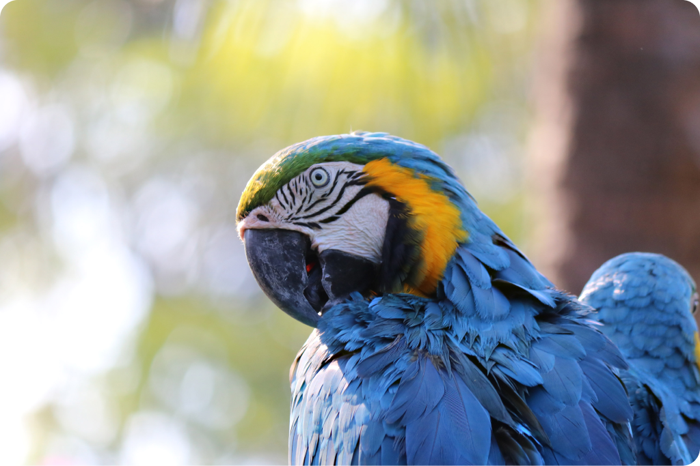
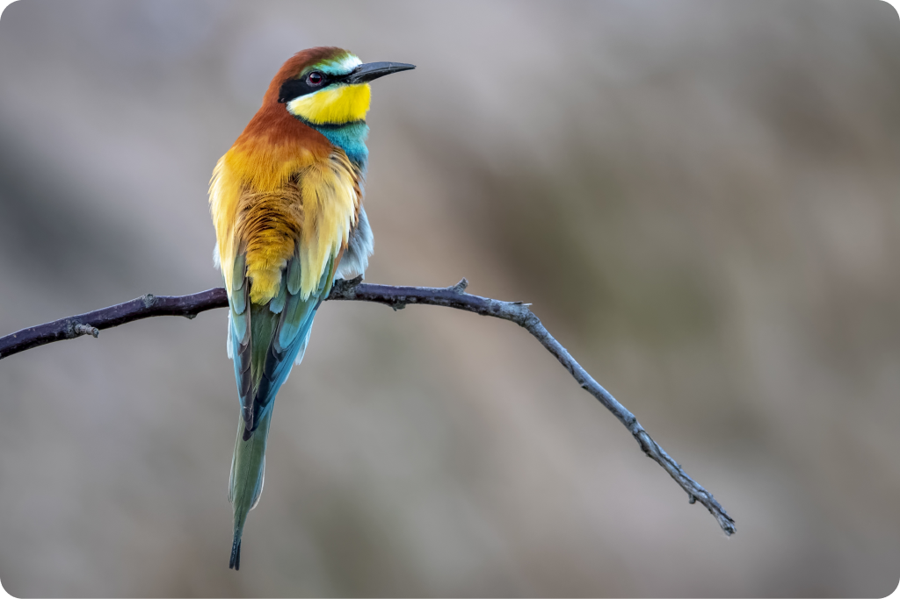

Parrots, also known as psittacines (/ˈsɪtəsaɪnz/),[1][2] are birds of the roughly 398 species[3] in 92 genera comprising the order Psittaciformes (/ˈsɪtəsɪfɔːrmiːz/), found mostly in tropical and subtropical regions. The order is subdivided into three superfamilies: the Psittacoidea ("true" parrots), the Cacatuoidea (cockatoos), and the Strigopoidea (New Zealand parrots). One-third of all parrot species are threatened by extinction, with higher aggregate extinction risk (IUCN Red List Index) than any other comparable bird group.[4] Parrots have a generally pantropical distribution with several species inhabiting temperate regions in the Southern Hemisphere, as well. The greatest diversity of parrots is in South America and Australasia.
Taxonomy
Psittaciform diversity in South America and Australasia suggests that the order may have evolved in Gondwana, centred in Australasia.[7] The scarcity of parrots in the fossil record, however, presents difficulties in confirming the hypothesis. There is currently a higher amount of fossil remains from the northern hemisphere in the early Cenozoic.[8] Molecular studies suggest that parrots evolved approximately 59 million years ago (Mya) (range 66–51 Mya) in Gondwana. The three major clades of Neotropical parrots originated about 50 Mya (range 57–41 Mya).
A single 15 mm (0.6 in) fragment from a large lower bill (UCMP 143274), found in deposits from the Lance Creek Formation in Niobrara County, Wyoming, had been thought to be the oldest parrot fossil and is presumed to have originated from the Late Cretaceous period, which makes it about 70 million years old.[10] However, other studies suggest that this fossil is not from a bird, but from a caenagnathid oviraptorosaur (a non-avian dinosaur with a birdlike beak), as several details of the fossil used to support its identity as a parrot are not actually exclusive to parrots, and it is dissimilar to the earliest-known unequivocal parrot fossils.
It is generally assumed that the Psittaciformes were present during the Cretaceous–Paleogene extinction event (K-Pg extinction), 66 mya. They were probably generalised arboreal birds, and did not have the specialised crushing bills of modern species.[8][13] Genomic analysis provides strong evidence that parrots are the sister group of passerines, forming the clade Psittacopasserae, which is the sister group of the falcons.
Morphology
Living species range in size from the buff-faced pygmy parrot, at under 10 g (0.4 oz) in weight and 8 cm (3.1 in) in length, to the hyacinth macaw, at 1 m (3.3 ft) in length, and the kakapo, at 4.0 kg (8.8 lb) in weight. Among the superfamilies, the three extant Strigopoidea species are all large parrots, and the cockatoos tend to be large birds, as well. The Psittacoidea parrots are far more variable, ranging the full spectrum of sizes shown by the family.
The most obvious physical characteristic is the strong, curved, broad bill. The upper mandible is prominent, curves downward, and comes to a point. It is not fused to the skull, which allows it to move independently, and contributes to the tremendous biting pressure the birds are able to exert. A large macaw, for example, has a bite force of 35 kg/cm2 (500 lb/sq in), close to that of a large dog. The lower mandible is shorter, with a sharp, upward-facing cutting edge, which moves against the flat portion of the upper mandible in an anvil-like fashion. Touch receptors occur along the inner edges of the keratinised bill, which are collectively known as the "bill tip organ", allowing for highly dexterous manipulations. Seed-eating parrots have a strong tongue (containing similar touch receptors to those in the bill tip organ), which helps to manipulate seeds or position nuts in the bill so that the mandibles can apply an appropriate cracking force. The head is large, with eyes positioned high and laterally in the skull, so the visual field of parrots is unlike any other birds. Without turning its head, a parrot can see from just below its bill tip, all above its head, and quite far behind its head. Parrots also have quite a wide frontal binocular field for a bird, although this is nowhere near as large as primate binocular visual fields. Unlike humans, the vision of parrots is also sensitive to ultraviolet light.
Diet
The diet of parrots consists of seeds, fruit, nectar, pollen, buds, and sometimes arthropods and other animal prey. The most important of these for most true parrots and cockatoos are seeds; the large and powerful bill has evolved to open and consume tough seeds. All true parrots, except the Pesquet's parrot, employ the same method to obtain the seed from the husk; the seed is held between the mandibles and the lower mandible crushes the husk, whereupon the seed is rotated in the bill and the remaining husk is removed.[59] They may use their foot sometimes to hold large seeds in place. Parrots are granivores rather than seed dispersers, and in many cases where they are seen consuming fruit, they are only eating the fruit to get at the seed. As seeds often have poisons that protect them, parrots carefully remove seed coats and other chemically defended fruit parts prior to ingestion. Many species in the Americas, Africa, and Papua New Guinea consume clay, which releases minerals and absorbs toxic compounds from the gut.
Geographical range and body size predominantly explains diet composition of Neotropical parrots rather than phylogeny.
Some parrot species prey on animals, especially invertebrate larvae. Golden-winged parakeets prey on water snails,[65] the New Zealand kea can, though uncommonly, hunt adult sheep,[66] and the Antipodes parakeet, another New Zealand parrot, enters the burrows of nesting grey-backed storm petrels and kills the incubating adults.[67] Some cockatoos and the New Zealand kaka excavate branches and wood to feed on grubs; the bulk of the yellow-tailed black cockatoo's diet is made up of insects.
Breeding
With few exceptions, parrots are monogamous breeders who nest in cavities and hold no territories other than their nesting sites.[59][69] The pair bonds of the parrots and cockatoos are strong and a pair remains close during the nonbreeding season, even if they join larger flocks. As with many birds, pair bond formation is preceded by courtship displays; these are relatively simple in the case of cockatoos. In Psittacidae parrots' common breeding displays, usually undertaken by the male, include slow, deliberate steps known as a "parade" or "stately walk" and the "eye-blaze", where the pupil of the eye constricts to reveal the edge of the iris.[59] Allopreening is used by the pair to help maintain the bond. Cooperative breeding, where birds other than the breeding pair help raise the young and is common in some bird families, is extremely rare in parrots, and has only unambiguously been demonstrated in the El Oro parakeet and the golden parakeet (which may also exhibit polygamous, or group breeding, behaviour with multiple females contributing to the clutch).
Only the monk parakeet and five species of lovebirds build nests in trees,[71] and three Australian and New Zealand ground parrots nest on the ground. All other parrots and cockatoos nest in cavities, either tree hollows or cavities dug into cliffs, banks, or the ground. The use of holes in cliffs is more common in the Americas. Many species use termite nests, possibly to reduce the conspicuousness of the nesting site or to create a favourable microclimate.[72] In most cases, both parents participate in the nest excavation. The length of the burrow varies with species, but is usually between 0.5 and 2 m (1.6 and 6.6 ft) in length. The nests of cockatoos are often lined with sticks, wood chips, and other plant material. In the larger species of parrots and cockatoos, the availability of nesting hollows may be limited, leading to intense competition for them both within the species and between species, as well as with other bird families. The intensity of this competition can limit breeding success in some cases.[73][74] Hollows created artificially by arborists have proven successful in boosting breeding rates in these areas.[75] Some species are colonial, with the burrowing parrot nesting in colonies up to 70,000 strong.[76] Coloniality is not as common in parrots as might be expected, possibly because most species adopt old cavities rather than excavate their own.